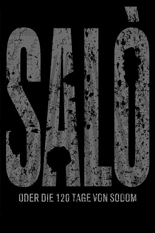
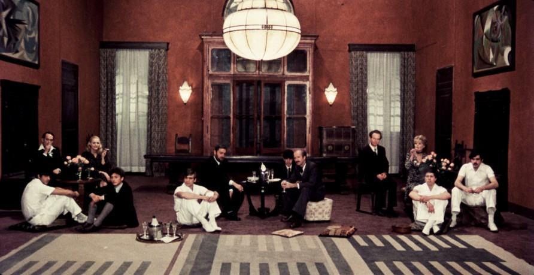

#5970 Die 120 Tage von Sodom
Alternativ: Salò, or the 120 Days of Sodom (Englischer Titel)
 
 IMDB-Wertung: 6.0 / 10
IMDB-Wertung: 6.0 / 10  Metascore: 0
Metascore: 0 
In der Republik von "Salò", dem letzten Refugium italienischer Faschisten kurz vor dem Ende der Mussolini-Herrschaft inszeniert eine Gruppe sadistischer Grossbürger terroristische Grausamkeitsrituale: Junge Männer und Frauen werden als Lust- und Folterobjekt missbraucht und erniedrigt, schliesslich in einer perversen Orgie zu Tode gequält. - Pier Paolo Pasolinis Abrechnung mit dem Faschismus.
Jahr: 1975
Dauer: 116 Minuten
FSK: BPjM Restricted
Land: Italien Studio: United ArtistsTonspuren:
Untertitel: Deutsch,
Auflösung: 720p (1280x688) Größe: 4474 MB
Genre: Drama, Krieg
Regisseur: Pier Paolo Pasolini
Drehbuch: Court Crandall
Soundtrack:
Darsteller:
-  Paolo Bonacelli als The Duke
- Caterina Boratto als Signora Castelli
- Elsa De Giorgi als Signora Maggi
- Franco Merli als Male Victim
- Marco Bellocchio als The President , uncredited
 Laura Betti als Signora Vaccari , uncredited
Laura Betti als Signora Vaccari , uncredited- Giorgio Cataldi als The Bishop
- Umberto Paolo Quintavalle als The Magistrate
- Aldo Valletti als The President
- Hélène Surgère als Signora Vaccari
- Sonia Saviange als The Pianist
- Sergio Fascetti als Male Victim
- Bruno Musso als Carlo Porro - Male Victim
- Antonio Orlando als Tonino - Male Victim
- Claudio Cicchetti als Male Victim
- Umberto Chessari als Male Victim
- Lamberto Book als Lamberto Gobbi - Male Victim
- Gaspare Di Jenno als Rino - Male Victim
- Giuliana Melis als Female Victim
- Faridah Malik als Fatimah - Female Victim
- Graziella Aniceto als Female Victim
- Renata Moar als Female Victim
- Dorit Henke als Female Victim
- Antiniska Nemour als Female Victim
- Benedetta Gaetani als Female Victim
- Olga Andreis als Eva - Female Victim
- Tatiana Mogilansky als Daughter
- Susanna Radaelli als Daughter
- Giuliana Orlandi als Daughter
- Liana Acquaviva als Daughter
- Rinaldo Missaglia als Guard
- Giuseppe Patruno als Guard
- Guido Galletti als Guard
- Efisio Etzi als Guard
- Claudio Troccoli als Collaborator
- Fabrizio Menichini als Collaborator
- Maurizio Valaguzza als Collaborator
- Ezio Manni als Collaborator
- Paola Pieracci als Wife
- Carla Terlizzi als Wife
- Anna Maria Dossena als Wife
- Anna Recchimuzzi als Wife
- Ines Pellegrini als The Slave Girl
- Giorgio Caproni als The Bishop , uncredited
- Alessandro Gennari als OVRA Officer , uncredited
- Marco Lucantoni als First Male Victim , uncredited
- Aurelio Roncaglia als The Magistrate , uncredited
Datei: X:\FSK18-1900-1999\120 Tage von Sodom, Die (1975, FSKBPjM Restricted, 1280x688).mkv seit 15.04.2017
Festplatte: FSK18
 Es gibt insgesamt 108 Filme in der Gruppe 'FSK18-1900-1999'
Es gibt insgesamt 108 Filme in der Gruppe 'FSK18-1900-1999'